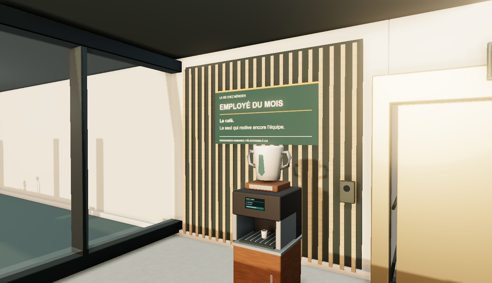
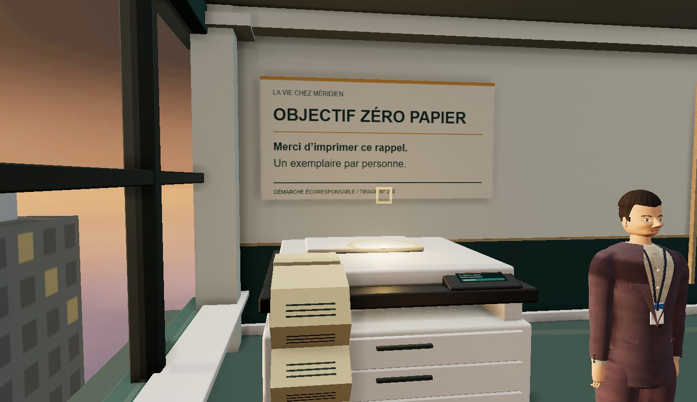
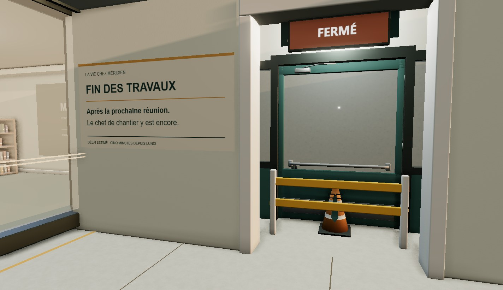
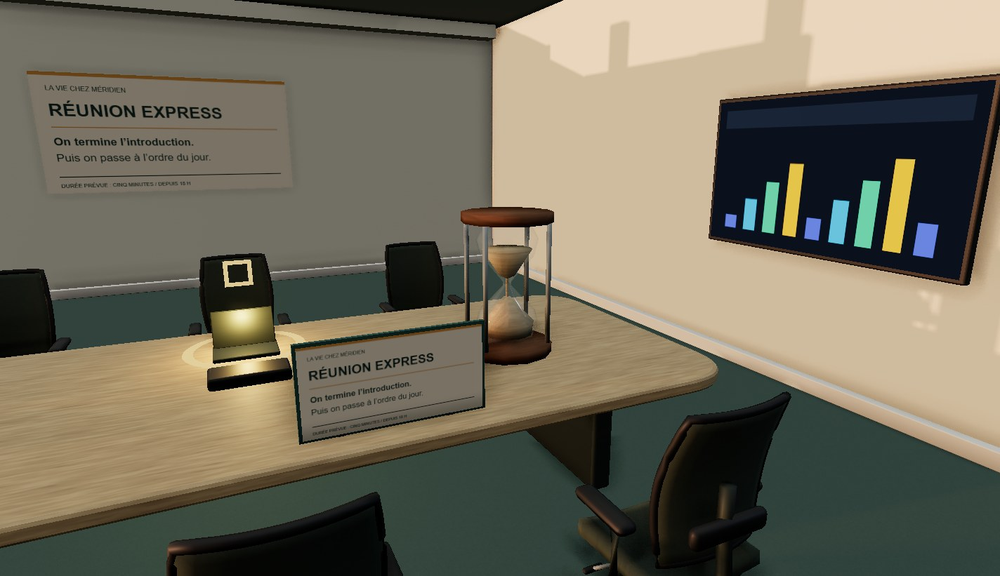
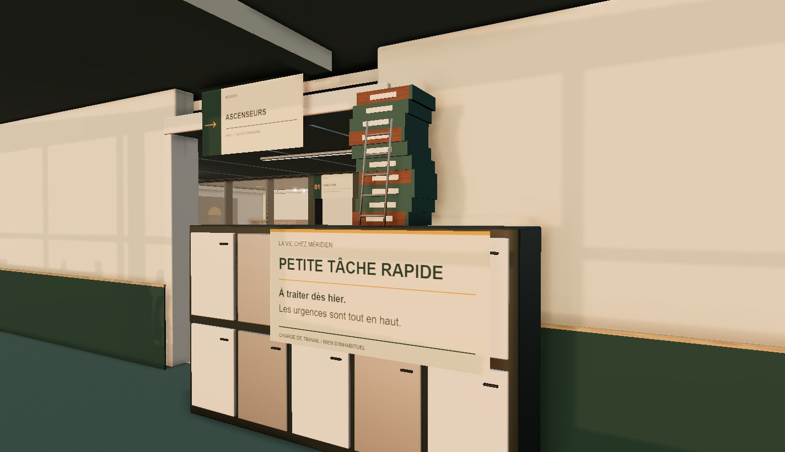
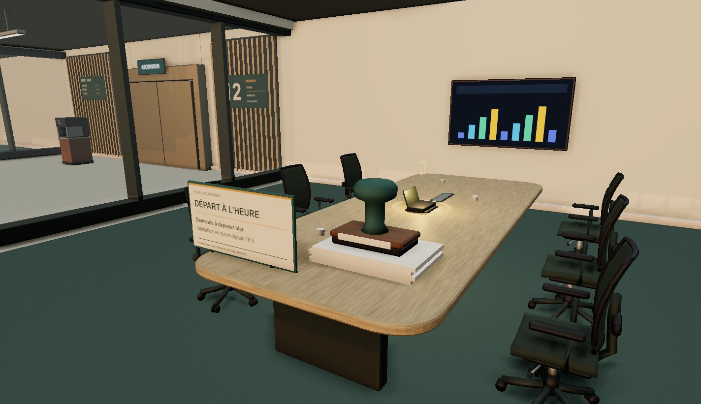

ESCAPE YOUR BOSS · VERSION 1.3.0
Les cinq petites minutes.
Six scènes de bureau, six accessoires créés dans Blender. Captures du jeu Windows : chaque étage conserve son éclairage, ses objectifs et son parcours.
1 · Employé du mois
Le café. Le seul qui motive encore l’équipe.

2 · Objectif zéro papier
Merci d’imprimer ce rappel. Un exemplaire par personne.

3 · Fin des travaux
Après la prochaine réunion. Le chef de chantier y est encore.

4 · Réunion express
On termine l’introduction. Puis on passe à l’ordre du jour.

5 · Petite tâche rapide
À traiter dès hier. Les urgences sont tout en haut.

6 · Départ à l’heure
Demande à déposer hier. Validation en cours depuis 18 h.
